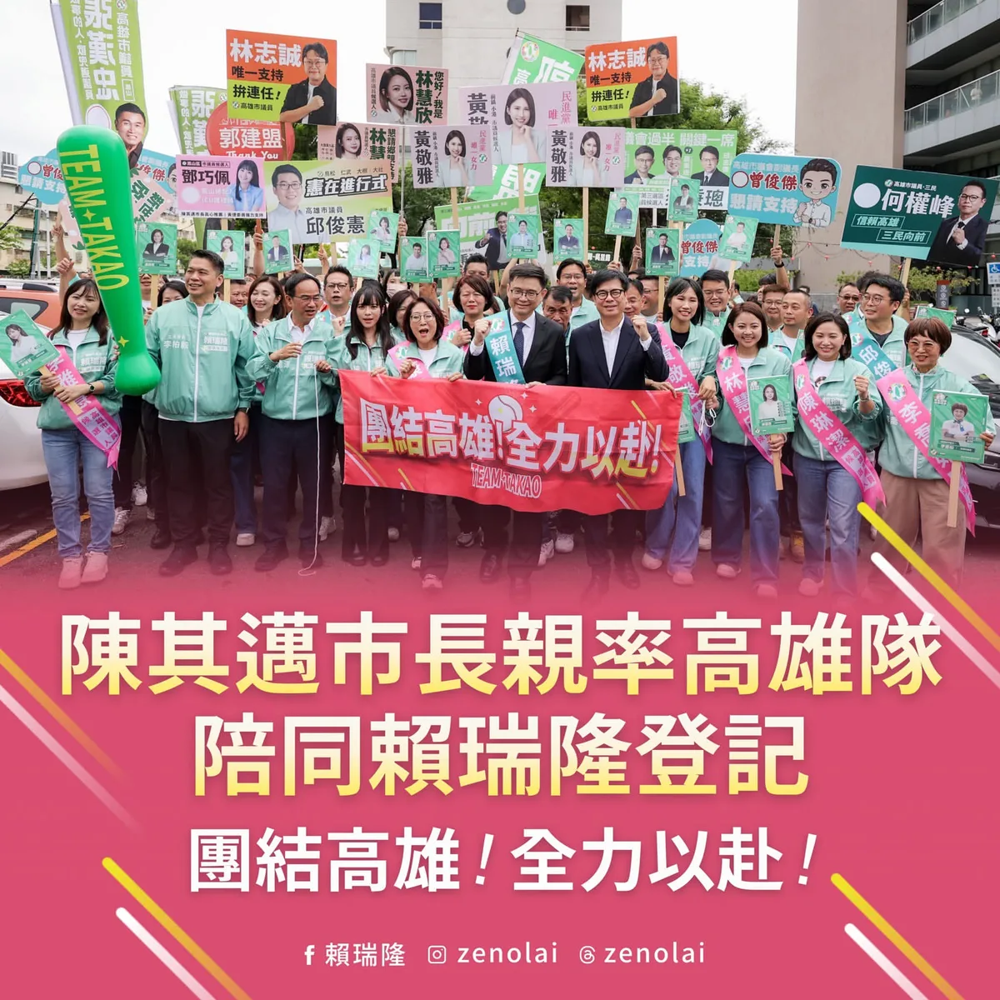
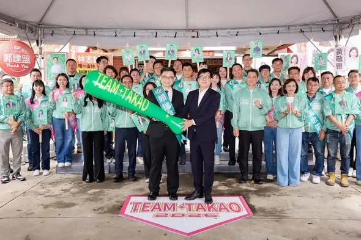

賴瑞隆zenolai
@zenolai:高雄隊，正式出發！ 接下關鍵第四棒，和所有隊友並肩向前，延續進步，為高雄拚出更好的未來。 高雄第一，全力以赴💪
Accounts
| 平台 | 帳號 | 已收錄貼文 | 最後更新 |
|---|---|---|---|
| 官網 | https://zenolai.oen.tw/ | 0 | — |
| https://www.facebook.com/zenolai2/ | 107 | 2026-09-02 20:19 | |
| https://www.instagram.com/zenolai/ | 91 | 2026-08-31 14:18 | |
| Threads | https://www.threads.com/@zenolai | 120 | 2026-09-02 20:22 |
| YouTube | https://www.youtube.com/@%E8%B3%B4%E7%91%9E%E9%9A%86 | 52 | 2026-09-01 19:12 |
| LINE 官方帳號 | https://lin.ee/zW17s0a | 0 | — |
Timeline
顯示 370 / 370 則
@zenolai:高雄隊，正式出發！ 接下關鍵第四棒，和所有隊友並肩向前，延續進步，為高雄拚出更好的未來。 高雄第一，全力以赴💪

堅守乾淨選舉 昨晚起，發現大量名稱、頭像高度重複的海外帳號異常湧入臉書追蹤；今天上午發布參選登記貼文後，更出現大量越南文帳號集中留言，留下「支持」的言論。 針對這項異常現象，團隊已在第一時間向 Meta 回報，請平台協助查明與處理。 我要再次說明，我一直秉持開放、正面的態度經營社群，我們不需要假帳號，更不接受任何透過異常帳號洗版、反串，進而製造錯誤連結、栽贓抹黑的政治操作。 上午登記時，我也宣示「正面第一」的承諾，相信高雄市民期待的是政策、願景與城市發展的對話，而不是充滿算計的網路攻防。 請有心人士停止這類行為，讓選舉回歸乾淨、理性的本質。我們堅持用政策說服市民，用成績爭取認同。 感謝每一位真實留下鼓勵的市民朋友，也謝謝所有願意提供意見的聲音。無論支持或有不同看法，我們都會認真傾聽、虛心面對；我也會繼續踏實打拚，用政策與行動爭取更多高雄市民的認同與支持。


走進市場，走近市民生活！市民朋友的期許，我會努力做到！

@zenolai:高雄隊，正式登場！ 高雄有山海河港，幅員遼闊，每個地區的生活樣貌與需求不盡相同。要把高雄顧好，需要熟悉地方的議員與參選人，讓鄉親的聲音有人聽見、地方的問題有人處理。 我們來自各地，現在把彼此的經驗和力量集結，組成一支守護市民、為高雄打拚的團隊。 每一張「高雄隊球員卡」，都代表一份對地方的責任與承諾。有人已在議會累積多年的問政經驗；有人帶著新的想法，準備為地方多做一點事。每個選區，都是我們要全力守好的主場，大家各自發揮所長、彼此支援，每位隊員都缺一不可。 明天，我會和高雄隊所有夥伴一起出發，接下高雄發展的關鍵第四棒，守護這幾年累積的成果、延續城市進步，為高雄拚出更好的未來。 #高雄大聯盟

@zenolai:上週五，小港松富街擋土牆發生坍塌，我第一時間聯繫相關單位，並趕赴現場掌握狀況。 今天上午，我再次前往現場了解最新情形，確認居民安置與邊坡安全，也要求相關單位持續加強現場防護，確保居民安全。 受到近期連續降雨影響，邊坡土體含水量增加，加上擋土牆已有34年，使原有邊坡承受更大壓力，凸顯面對極端氣候，老舊設施需要持續強化的重要性。 目前市府已預防性疏散7戶、28位居民，並完成危險樹木移除、崩塌區域覆蓋及安全防護，優先確保居民安全。 接下來，我會持續協調中央、地方，爭取復建經費支持。目前初步評估，整體復建工程經費可能超過一億元，將請市府儘速完成復建計畫，加快工程推動。 除了重建擋土牆，也同步檢視周邊邊坡，做好必要補強、排水與智慧監測，提升整體防護能力，讓工程不只是修復，更能從根本降低未來風險。把安全做好，把韌性做強，讓居民住得更安心。

@zenolai:團結拚勝選，延續高雄綠色執政！ 信賴之友會、小英之友會的夥伴齊心相挺，為高雄下一個黃金十年一起努力。我要特別感謝信賴之友會莊維周會長、小英之友會黃來進會長，還有所有堅信民主價值的夥伴。大家一路走來情義相挺，是我們最堅實的靠山。 台灣的民主是我們共同的信仰，而高雄的進步，則是所有人共同的選擇。面對選戰最後的90天，我們沒有任何鬆懈的空間。
@zenolai:前鎮漁港不是蔣萬安市長迴避台北市政爭議的避風港。 前鎮漁港3,000萬元的維護費用，和81億元的整體改造經費，不能混淆事實擾亂視聽。蔣萬安市長不該把台北市政的疏失，牽扯高雄前鎮漁港的建設，我願意邀請蔣萬安市長公開辯論，讓國人清楚事實真相。 你吃的鮪魚生魚片、中秋烤肉的秋刀魚，幾乎都來自高雄前鎮漁港。前鎮漁港年產值超過300億元，50年來從未進行大規模的改建，港區設備早已亟需大幅改造。 在我的積極爭取，並在蘇貞昌院長、時任行政院副院長陳其邁的共同努力下，中央通過81億元預算，推動前鎮漁港50年來最大規模的整體改建。這項整體建設涵蓋港區環境、魚貨運銷、碼頭設施及船員服務，全面提升前鎮漁港的整體機能，讓這座台灣重要的遠洋漁業基地跟上產業發展需求。這81億元包含五大部分： ✅ 多功能水產品運銷中心及既有魚市場整建27.46億元 ✅ 深水碼頭改建（含前鎮與旗津漁港）25.24億元 ✅ 港區下水道及污水系統建設15.64億元 ✅ 港區環境改善工程，包括道路及人行道等7.74億元 ✅ 多功能船員服務中心4.95億元

國防有戰力、產業有績效、高雄有訂單！打造無人載具護國群山 今天受邀出席無人載具系統產業發展協會大會，見證協會與恩德股份有限公司簽署MOU。恩德從精密機械製造跨足無人載具，就是傳統產業把既有技術帶進新市場的實際例子。 高雄有完整的航太、金屬加工、扣件、機械、電子、造船、軍工零組件等製造基礎，在這波無人載具產業發展中勢必扮演更重要的角色。 因此，我提出傳產升級的「四大策略、跨界加值」，就是要讓高雄既有的產業接上無人載具，取得新訂單、提升技術，進一步走向國際。 🔺建立產業媒合平台，打造「高雄隊」 整合企業技術與規格，讓高雄企業從單打獨鬥走向組隊接單，一起爭取更大的訂單。 🔺設立高雄產業升級基金，成立產業輔導團 協助企業進行製程改善、數位轉型、自動化與新產品開發，從設備升級一路做到市場接單。 🔺打造先進材料與智慧製造驗證中心 結合工研院、金屬中心、在地大學與產業界，協助企業做好材料分析、製程驗證、可靠度測試及國際認證。 🔺推動重大投資在地採購及人才接軌 科技大廠來高雄投資，不只是使用高雄的土地與能源，也要採購高雄的產品、使用在地服務，讓更多高雄企業進入供應鏈。 國防有戰力、產業有績效、高雄有訂單。 從高雄出發、連結世界，把科技與產業轉型的機會，變成高雄下一個黃金十年的新動能，讓高雄成為台灣無人載具重要的研發、製造與供應鏈基地，一起壯大台灣的護國群山。 鍾佳濱 黃文志 高雄市議員 林智鴻 高雄市議員 張博洋 尹立 左營楠梓市議員參選人 吳昱鋒-鎮港小前鋒 黃捷 服務團隊

@zenolai:從簡、從速、從寬，高雄農業災損啟動「免勘查」措施 為了讓受豪雨影響的農民朋友能更快申請農業災害救助，農業部公告，針對8月下旬豪雨造成的農作物損害，啟動簡化措施，落實「從簡、從速、從寬」。 這次高雄市全區適用，符合以下條件的農作物，區公所將採簡化程序，得「免勘查」辦理： 🔺適用地區：高雄市全區 🔺適用農作物：蔬菜全品項、酪梨、木瓜、番石榴 🔺注意事項：以「塑膠布溫網室」栽培的農作物不適用此簡化措施。 各區公所接下來會陸續公告受理時間，也請受災農民朋友留意所在地區公所的最新消息，在期限內提出申請。

Meet大南方登場，匯聚高雄新創能量 今天與陳其邁 Chen Chi-Mai 市長、經濟部龔明鑫部長一同來到高雄展覽館，參加第六屆「Meet Greater South 亞灣新創大南方」。今年集結250組國內外新創團隊，預計促成150組以上商務媒合，吸引超過1.2萬人次參觀，再次展現南台灣豐沛的創新能量。 從鋼鐵、石化、造船、金屬，到半導體、電子及AI伺服器，高雄擁有完整而多元的產業基礎及實際應用場域。目前，亞洲新灣區有超過340家企業進駐，我會持續推動「大亞灣計畫」，串聯205兵工廠、AI產業、新創、企業總部、智慧商辦及交通建設，進一步打造世界級產業聚落。 讓好點子在高雄找到舞台，讓創新成果走進產業，期待更多企業與新創在大南方相遇，一起開創高雄產業的下一步！ 📍Meet Greater South 亞灣新創大南方 •展覽時間｜8/28（五）09:00–17:00、8/29（六）09:30–17:00 •展覽地點｜高雄展覽館北館 林智鴻 高雄市議員 吳昱鋒-鎮港小前鋒

高雄隊，正式出發！ 接下關鍵第四棒，和所有隊友並肩向前，延續進步，為高雄拚出更好的未來。 高雄第一，全力以赴💪

@zenolai:完成登記！高雄隊正式登場，接下關鍵第四棒拚出下一個黃金十年。 今天，在陳其邁市長、康裕成議長和所有夥伴的陪同下，我正式登記參選高雄市長。 其邁市長親手把象徵「TAKAO第四棒」的球棒交到我手上。他勉勵我們，高雄曾經歷許多困難和挑戰，但就是靠著一棒接一棒，走到今天。 這座城市的進步，從未停歇。從謝長廷市長開創海洋首都、陳菊市長打造南方首都，到陳其邁市長帶領高雄大邁進，拚出經濟首都。 這一棒，我接下了！

國家級研教園區人才中心！攜手清大、陽明交大等頂尖學府，在高雄設立分校與研教據點，串聯南部大專院校能量，打造「高階人才供應系統」！

治水沒有終點！從單點改善走向整體流域治理，打造更有韌性的高雄 今早我和 邱志偉 委員，陪同經濟部長龔明鑫、農業部長陳駿季及中央、地方團隊，從梓官一路到岡山、永安，針對北高雄治水量能、農漁業災損及後續工程逐案檢討。 這波豪雨，北高雄多區達到超大豪雨等級，梓官最大24小時雨量539毫米、橋頭及彌陀達540毫米，梓官事件累積雨量更達1101毫米。高雄26座滯洪池、排水及抽水系統皆發揮成效，面對極端氣候挑戰，我們也會持續提升整體防洪韌性，讓各項治水建設更加完善。 因此，我再次向中央爭取支持土庫流域13.8億元整體工程、北溝流域5.1億元治理計畫，並要求持續推進滯洪池、抽水站、老舊機組汰換及護岸改善；地方反映的典寶溪分洪方案，也請相關單位進一步評估。 對於受災農漁民，我與高雄隊立委先前共同爭取畜牧業救助、農漁業災損現金救助及低利貸款，今天也再請農業部研議延長貸款免息期間，以「從優、從寬、從簡、從速」的原則，減輕大家復耕、復養的壓力。 高雄下一階段的治水，要推動「精準治水、韌性治城」。 從過去的單點改善，進一步走向整體流域治理，整合各項防汛硬體，提升城市防災韌性。 未來，我會持續與高雄隊友攜手，逐項改善、全區補強，守護市民生命財產安全，守住農漁民打拚的家園。 黃秋媖-動保議員 蔡秉璁 高雄向前衝

上週五，小港松富街擋土牆發生坍塌，我第一時間聯繫相關單位，並趕赴現場掌握狀況。 今天上午，我再次前往現場了解最新情形，確認居民安置與邊坡安全，也要求相關單位持續加強現場防護，確保居民安全。 受到近期連續降雨影響，邊坡土體含水量增加，加上擋土牆已有34年，使原有邊坡承受更大壓力，凸顯面對極端氣候，老舊設施需要持續強化的重要性。 目前市府已預防性疏散7戶、28位居民，並完成危險樹木移除、崩塌區域覆蓋及安全防護，優先確保居民安全。 接下來，我會持續協調中央、地方，爭取復建經費支持。目前初步評估，整體復建工程經費可能超過一億元，將請市府儘速完成復建計畫，加快工程推動。 除了重建擋土牆，也同步檢視周邊邊坡，做好必要補強、排水與智慧監測，提升整體防護能力，讓工程不只是修復，更能從根本降低未來風險。把安全做好，把韌性做強，讓居民住得更安心。

團結拚勝選，延續高雄綠色執政！ 信賴之友會、小英之友會的夥伴齊心相挺，為高雄下一個黃金十年一起努力。感謝信賴之友會會長莊維周醫師，多年投入國家醫療政策與公共衛生；也謝謝小英之友會會長黃來進，一直以來堅信價值、情義相挺。 從謝長廷市長、陳菊市長到陳其邁市長，一棒接一棒，推動城市轉型、重大建設與產業升級，累積出今天高雄的城市面貌。 高雄下一個十年，要有新的佈局。 我提出「大南方計畫」，要拚產業、留人才、強交通、顧生活。在歷任市長奠定的基礎上推動產業轉型、完善交通建設、照顧不同世代，為高雄布局下一個黃金十年。 高雄的進步，是高雄人共同的選擇；台灣的民主，是我們共同的價值。 最後90天，我們一起拚下勝選，延續綠色執政，讓高雄繼續為台灣拚出更好的未來！ 高雄小金剛許智傑 李柏毅 拚搏未來 康裕成 高雄市議長 姐姐的行動力 李喬如 何權峰 高雄市議員 簡煥宗 高雄市議員 黃彥毓 前鎮小港 我願意 邱俊憲 高雄市議員 湯詠瑜 詠瑜新選擇 陳慧文 高雄市議員 黃文益 高雄市議員 鄭孟洳 高雄市議員郭建盟 張勝富 高雄市議員 黃文志 高雄市議員 鄭光峰 高雄市議員 張博洋 尹立 左營楠梓市議員參選人 蔡秉璁 高雄向前衝 黃敬雅 Huang Ching-Ya 蘇致榮 鳳山阿榮 吳昱鋒-鎮港小前鋒 林慧欣 李昆澤 服務團隊
前鎮漁港不是蔣萬安市長迴避台北市政爭議的避風港。 前鎮漁港3,000萬元的維護費用，和81億元的整體改造經費，不能混淆事實擾亂視聽。蔣萬安市長不該把台北市政的疏失，牽扯高雄前鎮漁港的建設，我願意邀請蔣萬安市長公開辯論，讓國人清楚事實真相。 你吃的鮪魚生魚片、中秋烤肉的秋刀魚，幾乎都來自高雄前鎮漁港。前鎮漁港年產值超過300億元，50年來從未進行大規模的改建，港區設備早已亟需大幅改造。 在我的積極爭取，並在蘇貞昌院長、時任行政院副院長陳其邁的共同努力下，中央通過81億元預算，推動前鎮漁港50年來最大規模的整體改建。這項整體建設涵蓋港區環境、魚貨運銷、碼頭設施及船員服務，全面提升前鎮漁港的整體機能，讓這座台灣重要的遠洋漁業基地跟上產業發展需求。這81億元包含五大部分： ✅ 多功能水產品運銷中心及既有魚市場整建27.46億元 ✅ 深水碼頭改建（含前鎮與旗津漁港）25.24億元 ✅ 港區下水道及污水系統建設15.64億元 ✅ 港區環境改善工程，包括道路及人行道等7.74億元 ✅ 多功能船員服務中心4.95億元 前鎮漁港是臺灣最大遠洋漁港，具有指標性的地位，也是台灣重要產業之一，請所有國人一起支持我們的遠洋漁業。

爭取小港松富街復建經費 全面建構韌性高雄 昨日小港松富街發生擋土牆坍塌，我在第一時間掌握狀況，聯繫市府工務局等單位，協調緊急處置。今天也到現場，了解居民安置及邊坡安全情形，並針對重建所需經費，致電行政院秘書長爭取中央支持。 目前市府已預防性疏散7戶、28位居民，並移除危險樹木、覆蓋崩塌區域及設置安全防護，避免持續降雨造成二次災害。 這座擋土牆已有34年，初步估算重建約需數千萬元，將請市府儘速提出復建計畫，爭取中央經費，加速推動重建工程。 目標力拚明年汛期前完成重建，並以長久性、系統性的方式全面檢視邊坡及周邊安全，結合必要的補強與智慧監測，從根本降低風險，讓居民住得更安心。
@zenolai:今天下午，小港區松富街發生擋土牆倒塌，所幸沒有人員受傷。 市府已緊急疏散7戶、28位居民，並調派人力機具進場處理，先移除危險樹木、覆蓋崩塌區域並設置夜間警示，確保周邊居民安全。 目前現場仍在緊急處置，請民眾暫時不要靠近崩塌區域。近期豪雨過後，各地坡地及擋土牆周邊都要特別留意，行經時請放慢車速，也盡量不要將車輛停在邊坡下方，安全第一。

@zenolai:治水沒有終點，防洪建設更不能停。 近年極端氣候越來越頻繁，大雨一來，東高雄和山區的防汛壓力也跟著增加。面對這樣的挑戰，我們必須和市府團隊並肩作戰，持續強化各項基礎建設，讓高雄的防洪網更加堅固。 這幾年，我和高雄隊持續向中央爭取治水、防洪和農路改善經費，在113至115年度計畫中，共爭取42項重大工程，核定經費達5億8364萬元；加上持續協調推動中的案件，總計79項基層建設。 這些經費將投入杉林、內門、旗山、那瑪夏、桃源、茂林、甲仙、田寮等地，優先投入野溪整治、護岸修復、排水改善和邊坡加固工程。我們全力協助地方升級防汛設施，把防洪的每一道環節做得更紮實，才能在大雨來的時候，帶給大家多一分保障。 高雄38區，區域發展必須齊頭並進。 未來，我會繼續走進地方、了解第一線需求，和高雄隊共同爭取中央資源，做市府團隊最堅實的後盾。也將以「韌性高雄工程2.0」為下一階段方向，從治水延伸到城市防災，讓高雄面對極端氣候時更有韌性，也讓每一位市民住得更安心。

@zenolai:堅守乾淨選舉 昨晚起，發現大量名稱、頭像高度重複的海外帳號異常湧入臉書追蹤；今天上午發布參選登記貼文後，更出現大量越南文帳號集中留言，留下「支持」的言論。 針對這項異常現象，團隊已在第一時間向 Meta 回報，請平台協助查明與處理。 我要再次說明，我一直秉持開放、正面的態度經營社群，我們不需要假帳號，更不接受任何透過異常帳號洗版、反串，進而製造錯誤連結、栽贓抹黑的政治操作。 上午登記時，我也宣示「正面第一」的承諾，相信高雄市民期待的是政策、願景與城市發展的對話，而不是充滿算計的網路攻防。 請有心人士停止這類行為，讓選舉回歸乾淨、理性的本質。我們堅持用政策說服市民，用成績爭取認同。 感謝每一位真實留下鼓勵的市民朋友，也謝謝所有願意提供意見的聲音。無論支持或有不同看法，我們都會認真傾聽、虛心面對；我也會繼續踏實打拚，用政策與行動爭取更多高雄市民的認同與支持。

完成登記！高雄隊正式登場，接下關鍵第四棒拚出下一個黃金十年 今天，在 陳其邁 Chen Chi-Mai 市長、 康裕成 高雄市議長 ，各位立委兄弟姐妹和所有 #高雄大聯盟 好夥伴的陪同下我正式登記參選高雄市長。 20年前，一個從菜市場長大的勞工之子，帶著對高雄的熱愛踏入公部門。從基層助理、市府政務官到國會議員，一路走來，是高雄人的栽培，讓我有機會站上今天這個關鍵打席。 高雄的進步，是一棒接一棒的傳承。謝長廷市長開創 #海洋首都，陳菊市長打造 #南方首都，陳其邁市長則以 #緊緊緊 的精神，帶領高雄大邁進，拚出 #經濟首都。 陳其邁市長親手把象徵「TAKAO第四棒」的球棒交到我手上。 其邁市長說，高雄曾經歷許多困難與挑戰，但就是靠著一棒接一棒、一步一腳印，走到今天。現在，高雄站在新的關鍵時刻，他相信我有能力接下這份重責大任，帶領高雄繼續向前。 這一棒，我接下了。 我要承接前三棒累積的成果，繼續往前拚。高雄下一個十年，不只要延續進步，更要再下一城，從台灣的高雄走向世界的高雄。 在此，我也正式發布 #全壘打宣言 ，提出「四個第一」的四項承諾： ✅高雄第一 任何時候、任何決策、任何選擇，高雄的利益永遠擺在第一位。 ✅正面第一 我們堅持打一場快樂、充滿希望的選戰，用政策說服市民，用成績爭取認同。 ✅團結第一 從市府、國會、議會到全區里長、百工社團，每一位夥伴都是先發隊員。我要團結所有深愛高雄、相信進步價值的力量，組成最強的高雄隊。 ✅專業第一 「進步不回頭」是我們共同的盼望。我誓言將與所有夥伴，以專業、經驗、穩健的態度處理每一項市政，說到做到、馬上上手。 接下來，我會延續 #緊緊緊 的效率，發揮 #拚拚拚 的行動力，以魄力守護高雄、捍衛高雄、壯大高雄。 未來的路或許充滿考驗，但咱的心更堅定。因為咱承擔的不只是責任，也是高雄人的未來。 11月28日，讓我們團結高雄，全力以赴！請大家支持賴瑞隆，也全力相挺 #高雄大聯盟 的所有議員夥伴。市長順利接棒，議會拚過半，高雄隊正式登場，讓我們一起唱出屬於全體高雄人的勝利之歌，打造大南方的下一個黃金十年！ 登真-邱議瑩 李昆澤 李柏毅 拚搏未來 黃捷 林慧欣 陳琳潔 林志誠-高雄市議員黃秋媖-動保議員 蔡秉璁 高雄向前衝 黃文志 高雄市議員 李雅慧 高雄市議員 尹立 左營楠梓市議員參選人 理想青年 張以理 邱俊憲 高雄市議員 張勝富 高雄市議員 江瑞鴻 高雄市議員 黃飛鳳 高雄市議員 簡煥宗 高雄市議員 姐姐的行動力 李喬如 何權峰 高雄市議員 鄭孟洳 曾俊傑 張博洋 湯詠瑜 詠瑜新選擇 高雄市議員郭建盟 黃文益 高雄市議員 陳慧文 高雄市議員 林智鴻 高雄市議員 張漢忠 高雄市議員 蘇致榮 鳳山阿榮 鳳山絕配 鄧巧佩 鄭光峰 高雄市議員 黃敬雅 Huang Ching-Ya 吳昱鋒-鎮港小前鋒 高雄市議員 李雨庭 洪村銘 大寮林園要改變 #厝邊阿中張耀中 溫暖的巨人 巫振興金禾雅

提前部署、做好萬全準備，守護鄉親安全！

治水沒有終點！從單點改善走向整體流域治理，打造更有韌性的高雄 今早我和 邱志偉 委員，陪同經濟部長龔明鑫、農業部長陳駿季及中央、地方團隊，從梓官一路到岡山、永安，針對北高雄治水量能、農漁業災損及後續工程逐案檢討。 這波豪雨，北高雄多區達到超大豪雨等級，梓官最大24小時雨量539毫米、橋頭及彌陀達540毫米，梓官事件累積雨量更達1101毫米。高雄26座滯洪池、排水及抽水系統皆發揮成效，面對極端氣候挑戰，我們也會持續提升整體防洪韌性，讓各項治水建設更加完善。 因此，我再次向中央爭取支持土庫流域13.8億元整體工程、北溝流域5.1億元治理計畫，並要求持續推進滯洪池、抽水站、老舊機組汰換及護岸改善；地方反映的典寶溪分洪方案，也請相關單位進一步評估。 對於受災農漁民，我與高雄隊立委先前共同爭取畜牧業救助、農漁業災損現金救助及低利貸款，今天也再請農業部研議延長貸款免息期間，以「從優、從寬、從簡、從速」的原則，減輕大家復耕、復養的壓力。 高雄下一階段的治水，要推動「精準治水、韌性治城」。 從過去的單點改善，進一步走向整體流域治理，整合各項防汛硬體，提升城市防災韌性。 未來，我會持續與高雄隊友攜手，逐項改善、全區補強，守護市民生命財產安全，守住農漁民打拚的家園。 黃秋媖-動保議員 蔡秉璁 高雄向前衝

上週五，小港松富街擋土牆發生坍塌，我第一時間聯繫相關單位，並趕赴現場掌握狀況。 今天上午，我再次前往現場了解最新情形，確認居民安置與邊坡安全，也要求相關單位持續加強現場防護，確保居民安全。 受到近期連續降雨影響，邊坡土體含水量增加，加上擋土牆已有34年，使原有邊坡承受更大壓力，凸顯面對極端氣候，老舊設施需要持續強化的重要性。 目前市府已預防性疏散7戶、28位居民，並完成危險樹木移除、崩塌區域覆蓋及安全防護，優先確保居民安全。 接下來，我會持續協調中央、地方，爭取復建經費支持。目前初步評估，整體復建工程經費可能超過一億元，將請市府儘速完成復建計畫，加快工程推動。 除了重建擋土牆，也同步檢視周邊邊坡，做好必要補強、排水與智慧監測，提升整體防護能力，讓工程不只是修復，更能從根本降低未來風險。把安全做好，把韌性做強，讓居民住得更安心。

@zenolai:健康的高雄，需要第一線醫護人員共同來守護。 今天，高雄37個醫藥護公會和團體齊聚一堂，正式成立「醫藥護大聯盟後援總會」。謝謝國策顧問莊維周醫師接任總會長，更感謝前衛福部長陳時中專程南下站台，肯定我們能結合中央政策和在地需求，為高雄提出最完整的醫療規劃。 因為深知醫護夥伴日夜守護大家的辛勞，我們更想做醫療人員最堅實的靠山。為了給第一線最實質的支持，今天我也正式提出了「健康高雄2.0」的四大願景。

國防有戰力、產業有績效、高雄有訂單！打造無人載具護國群山 今天受邀出席無人載具系統產業發展協會大會，見證協會與恩德股份有限公司簽署MOU。恩德從精密機械製造跨足無人載具，就是傳統產業把既有技術帶進新市場的實際例子。 高雄有完整的航太、金屬加工、扣件、機械、電子、造船、軍工零組件等製造基礎，在這波無人載具產業發展中勢必扮演更重要的角色。 因此，我提出傳產升級的「四大策略、跨界加值」，就是要讓高雄既有的產業接上無人載具，取得新訂單、提升技術，進一步走向國際。 🔺建立產業媒合平台，打造「高雄隊」 整合企業技術與規格，讓高雄企業從單打獨鬥走向組隊接單，一起爭取更大的訂單。 🔺設立高雄產業升級基金，成立產業輔導團 協助企業進行製程改善、數位轉型、自動化與新產品開發，從設備升級一路做到市場接單。 🔺打造先進材料與智慧製造驗證中心 結合工研院、金屬中心、在地大學與產業界，協助企業做好材料分析、製程驗證、可靠度測試及國際認證。 🔺推動重大投資在地採購及人才接軌 科技大廠來高雄投資，不只是使用高雄的土地與能源，也要採購高雄的產品、使用在地服務，讓更多高雄企業進入供應鏈。 國防有戰力、產業有績效、高雄有訂單。 從高雄出發、連結世界，把科技與產業轉型的機會，變成高雄下一個黃金十年的新動能，讓高雄成為台灣無人載具重要的研發、製造與供應鏈基地，一起壯大台灣的護國群山。 鍾佳濱 黃文志 高雄市議員 林智鴻 高雄市議員 張博洋 尹立 左營楠梓市議員參選人 吳昱鋒-鎮港小前鋒 黃捷 服務團隊

@zenolai:爭取小港松富街復建經費 全面建構韌性高雄 昨日小港松富街發生擋土牆坍塌，我在第一時間掌握狀況，聯繫市府工務局等單位，協調緊急處置。今天也到現場，了解居民安置及邊坡安全情形，並針對重建所需經費，致電行政院秘書長爭取中央支持。 目前市府已預防性疏散7戶、28位居民，並移除危險樹木、覆蓋崩塌區域及設置安全防護，避免持續降雨造成二次災害。 這座擋土牆已有34年，初步估算重建約需數千萬元，將請市府儘速提出復建計畫，爭取中央經費，加速推動重建工程。 目標力拚明年汛期前完成重建，並以長久性、系統性的方式全面檢視邊坡及周邊安全，結合必要的補強與智慧監測，從根本降低風險，讓居民住得更安心。

Meet大南方登場，匯聚高雄新創能量 今天與陳其邁 Chen Chi-Mai 市長、經濟部龔明鑫部長一同來到高雄展覽館，參加第六屆「Meet Greater South 亞灣新創大南方」。今年集結250組國內外新創團隊，預計促成150組以上商務媒合，吸引超過1.2萬人次參觀，再次展現南台灣豐沛的創新能量。 從鋼鐵、石化、造船、金屬，到半導體、電子及AI伺服器，高雄擁有完整而多元的產業基礎及實際應用場域。目前，亞洲新灣區有超過340家企業進駐，我會持續推動「大亞灣計畫」，串聯205兵工廠、AI產業、新創、企業總部、智慧商辦及交通建設，進一步打造世界級產業聚落。 讓好點子在高雄找到舞台，讓創新成果走進產業，期待更多企業與新創在大南方相遇，一起開創高雄產業的下一步！ 📍Meet Greater South 亞灣新創大南方 •展覽時間｜8/28（五）09:00–17:00、8/29（六）09:30–17:00 •展覽地點｜高雄展覽館北館 林智鴻 高雄市議員 吳昱鋒-鎮港小前鋒

治水沒有終點，防洪建設更不能停。 近年極端氣候越來越頻繁，大雨一來，東高雄和山區的防汛壓力也跟著增加。面對這樣的挑戰，我們必須和市府團隊並肩作戰，持續強化各項基礎建設，讓高雄的防洪網更加堅固。 這幾年，我和高雄隊持續向中央爭取治水、防洪和農路改善經費，在113至115年度計畫中，共爭取42項重大工程，核定經費達5億8364萬元；加上持續協調推動中的案件，總計79項基層建設。 這些經費將投入杉林、內門、旗山、那瑪夏、桃源、茂林、甲仙、田寮等地，優先投入野溪整治、護岸修復、排水改善和邊坡加固工程。我們全力協助地方升級防汛設施，把防洪的每一道環節做得更紮實，才能在大雨來的時候，帶給大家多一分保障。 高雄38區，區域發展必須齊頭並進。 未來，我會繼續走進地方、了解第一線需求，和高雄隊共同爭取中央資源，做市府團隊最堅實的後盾。也將以「韌性高雄工程2.0」為下一階段方向，從治水延伸到城市防災，讓高雄面對極端氣候時更有韌性，也讓每一位市民住得更安心。